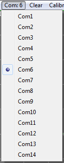

|  |
When a Com port is active, the
Menu text will change to the active port number. If the selected port
does not have the Mini_CT communicating or the port is not valid, the
Com port text will change to Com:XX. On start up, the program searches for a serial port with an attached Mini_CT. This may take several seconds to locate. The same is true when selecting a port manually. Wait a few seconds for the program to respond. |